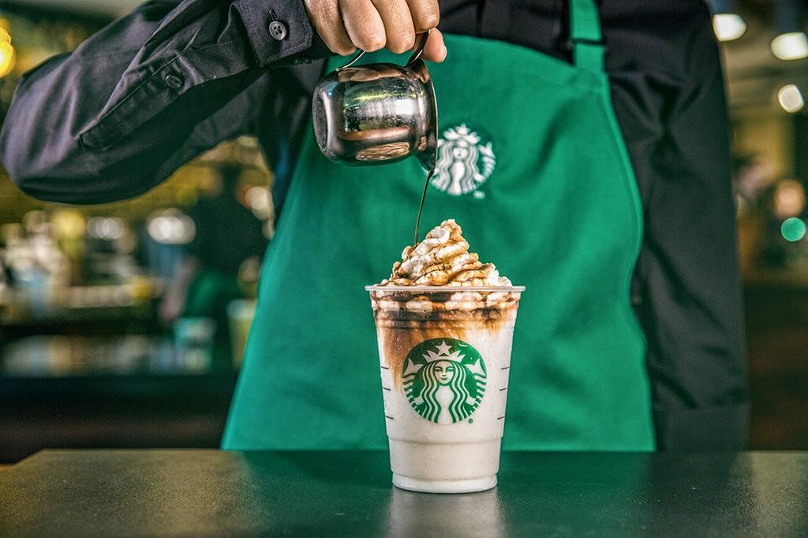
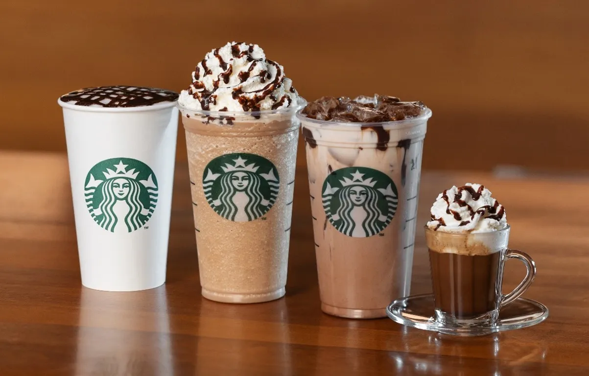
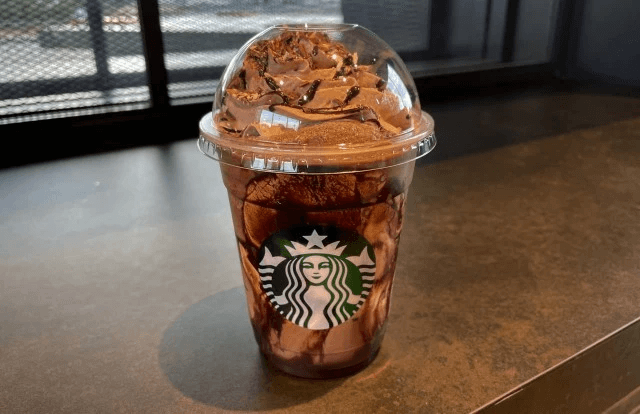

Níveis de Torra
Experimente o melhor do café premium em um ambiente aconchegante e acolhedor. Com uma variedade incrível de bebidas à base de café, deliciosos alimentos e um compromisso com a sustentabilidade, o Starbucks é o seu local ideal para café e momentos especiais. Junte-se a nós e aproveite a experiência Starbucks hoje mesmo!
  Procurando por um momento de pura satisfação? Não procure mais! Nossa seleção de cafés premium é cuidadosamente escolhida e preparada para agradar aos paladares mais exigentes.